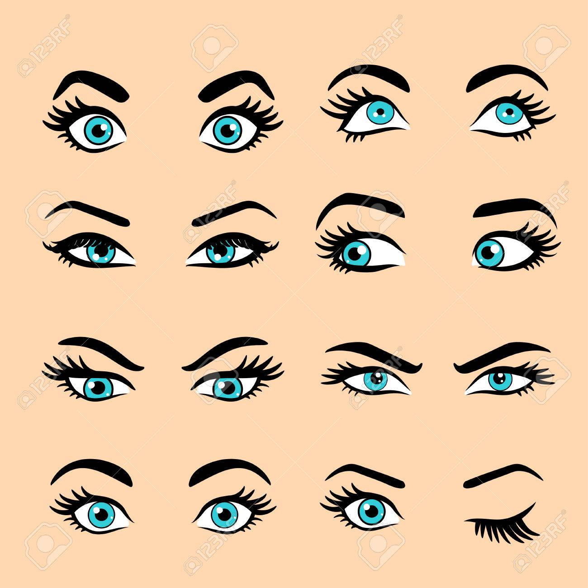

Body language refers to the nonverbal signals that we use to communicate. According to experts, these nonverbal signals make up a huge part of daily communication. From our facial expressions to our body movements, the things we don't say can still convey volumes of information. It has been suggested that body language may account for between 50 percent to 70 percent of all communication. Understanding body language is important, but it is also essential to pay attention to other cues such as context. In many cases, you should look at signals as a group rather than focusing on a single action. Here's what to look for when you're trying to interpret body language.
Think for a moment about how much a person is able to convey with just a facial expression. A smile can indicate approval or happiness. A frown can signal disapproval or unhappiness. In some cases, our facial expressions may reveal our true feelings about a particular situation. While you say that you are feeling fine, the look on your face may tell people otherwise.

The expression on a person's face can even help determine if we trust or believe what the individual is saying. One study found that the most trustworthy facial expression involved a slight raise of the eyebrows and a slight smile. This expression, the researchers suggested, conveys both friendliness and confidence.
The Eyes
The eyes are frequently referred to as the "windows to the soul" since they are capable of revealing a great deal about what a person is feeling or thinking. As you engage in conversation with another person, taking note of eye movements is a natural and important part of the communication process. Some common things you may notice include whether people are making direct eye contact or averting their gaze, how much they are blinking, or if their pupils are dilated.
